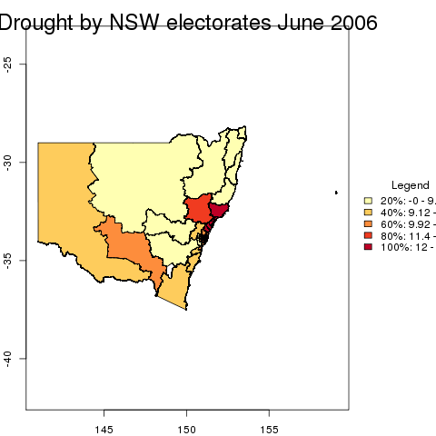
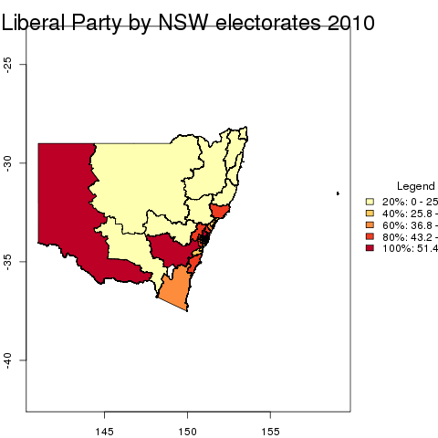
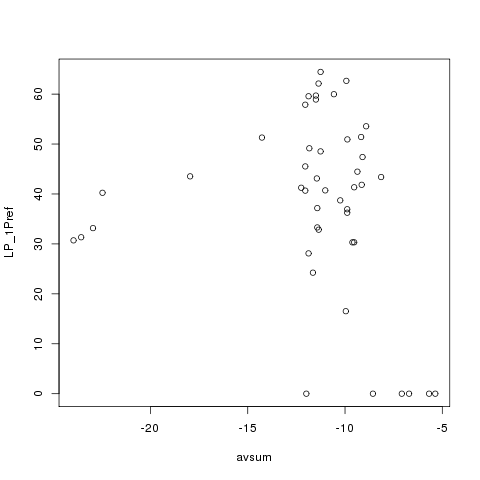

AEC analysis
We explore the hypothesis that Australians are more likely to vote for conservative political parties during droughts. The study design is a spatial association of drought data with Electoral results.
Table of Contents
1 Introduction
This is a test of the SWISH EWEDB service. We follow the Replication Standard \cite{King1995}. This is a compendium \cite{Gentleman2007} using the orgmode approach \cite{Schulte}.
2 Data
2.1 Merge
2.1.1 merge1 drought with electorate boundaries
- mapDroughtByElectorate

2.1.2 merge2 all
- mapConservativeByElectorate

3 Analysis
3.1 scatterplot

4 Bibliography
5 Metadata
Users must cite the data like this:
Exposure variables were calculated for our study regions using a PostgreSQL database [http://www.postgresql.org] with the PostGIS spatial extension [http://postgis.refractions.net] managed by the Australian National Centre for Epidemiology and Population Health at the Australian National University.
We used the Bureau of Meteorology’s gridded monthly climate data at a resolution of 0.25 degree of latitude-longitude to calculate a drought index based on six-monthly percentiles for each place’s rainfall record from 1890 and 2008.
The National Climate Centre. Gridded Monthly Rainfall Data between 1890 and 2003 at 0.25 degree of latitude-longitude: The Bureau of Meteorology Research Centre, 700 Collins Street, Docklands, Melbourne, VIC, 3008. 2004.
We used the drought index described in Smith, Hutchinson and McArthur (1992).
Smith D, Hutchinson M, McArthur R. Climatic and Agricultural Drought: Payments and Policy. Canberra, ACT: Centre for Resource and Environmental Studies, Australian National University. 1992." and please let me or the National Climate Centre know of any publications arising from these data. \clearpage